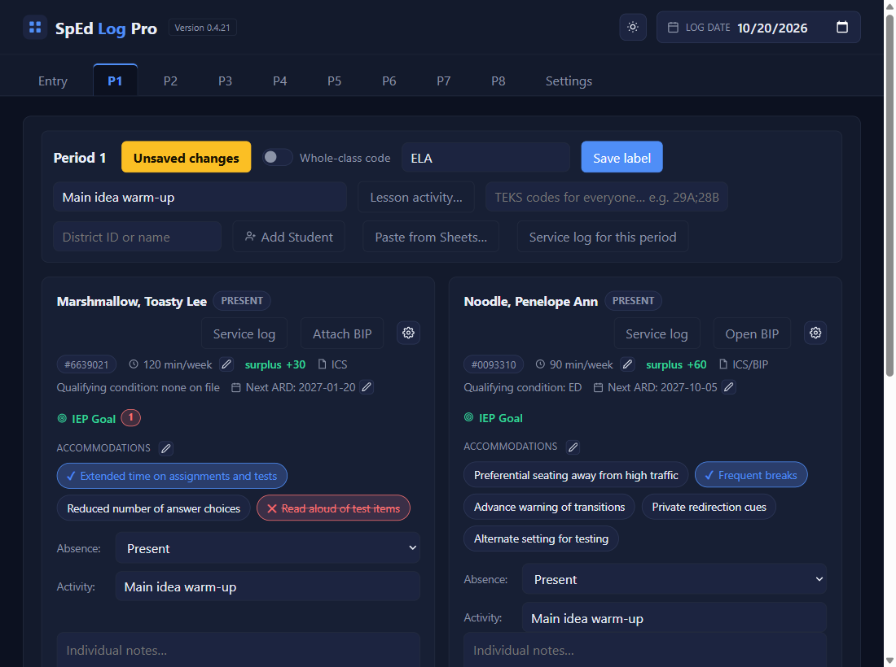
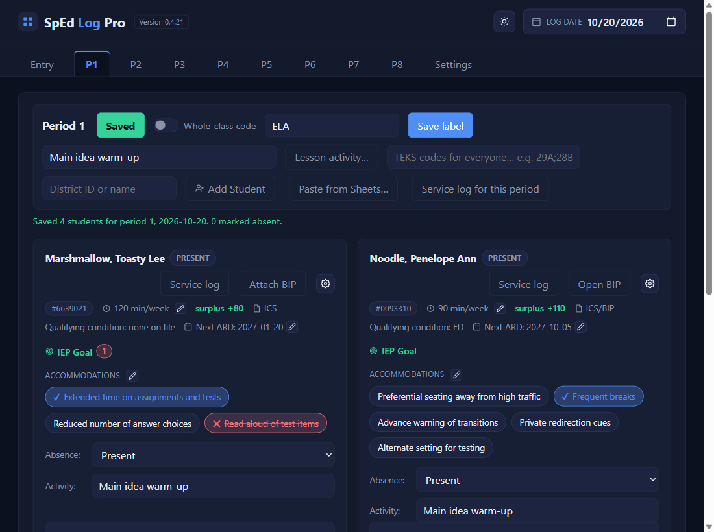

Start here · Stop 6 of 6
Log your first day
⏱ About 5 minutes per class🔁 Every class, every dayYou need: your students added
Stop 6 of 6
Why: this is the daily routine: the activity, the accommodations used, any absences, then Save. Nothing is saved until you click Save, and the button's colour always tells you where you stand.
1
Type the class activity at the top
In Activity / lesson topic for everyone…. It fills into every student's own Activity box; you can still change any one student's.

2
Mark the accommodations each student used
Click a chip once for ✓ delivered, twice for ✕ declined (red, crossed out), three times to clear it. Every chip starts unmarked each day. A student who wasn't there: pick AB, O, or S in Absence; the card greys out except Individual notes… (see Absences & whole-class codes). Notes go in the Individual notes… box.
The badge right after each student's nameNEWfor version 0.4.21 and beyond says PRESENT, or the code you picked.
3
The Save button turns yellow: click it
Unsaved changes means you have something waiting.
4
Green means saved
The button reads Saved, and a line says what was written. Then do the next class.

✓ You'll know it worked
- The button is green: Saved.
- A line like
Saved 2 students for period 1, 2026-10-19. 0 marked absent. - The Entry tab's Unresolved dates number goes down.
✕ Avoid these
- Leaving with yellow showing. The app asks: Save, Discard, or Cancel. Pick Save.
- Clearing a box to "undo" it. To correct saved text, type the corrected text and Save again.
⚠ If you see this
… isn't a school day in your calendar. Save anyway?Check the Log date at the top. If it's wrong, click Cancel and change it.
Period 1 has no Activity logged …, though students were saved.Go back and add the Activity, unless there really wasn't one.